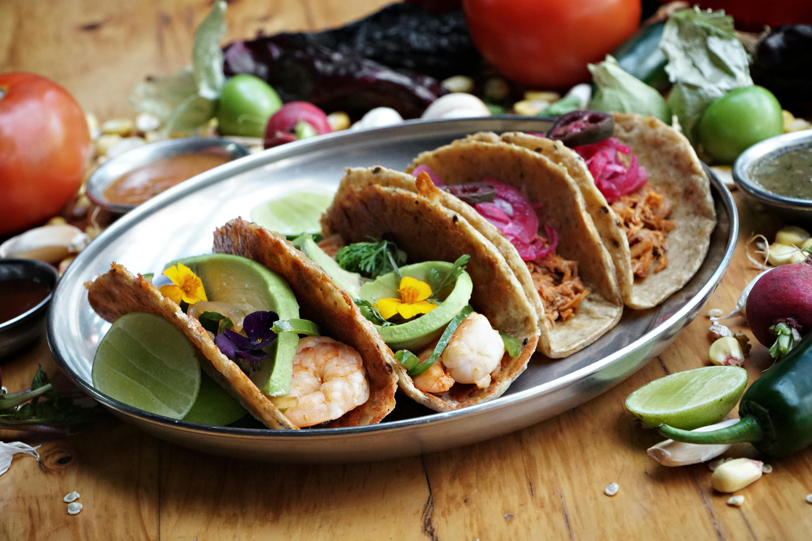
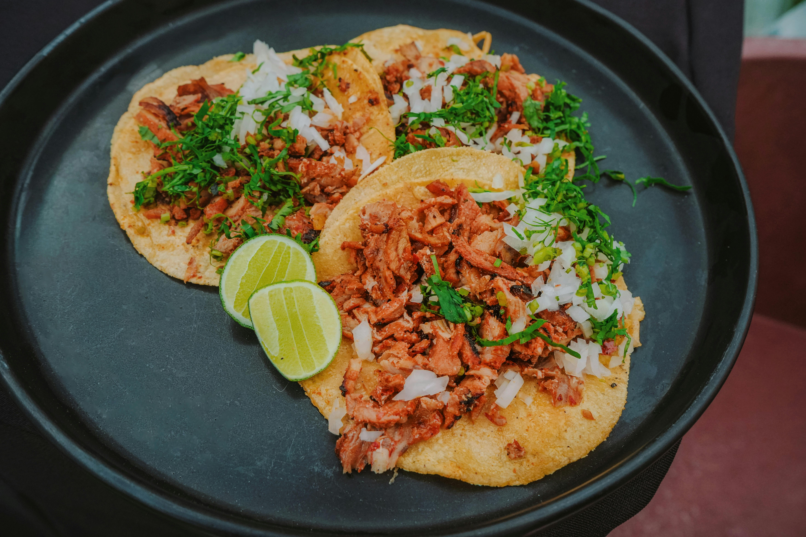
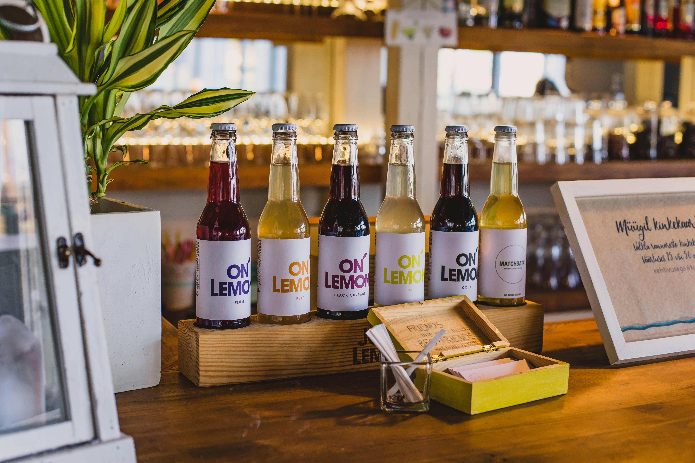
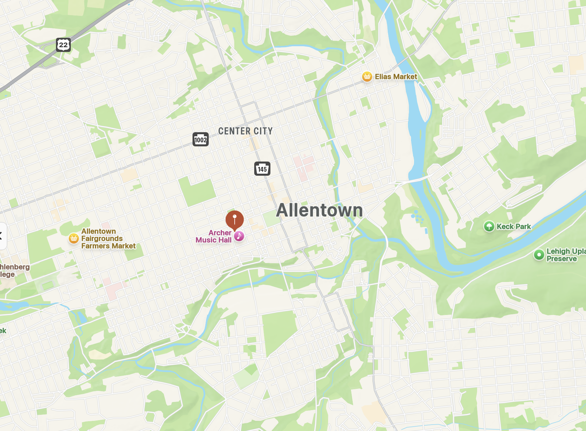

Meat Tacos

- Signature Steak Taco
- Our most requested menu item
- Classic, simple, and delicious

- Signature Chicken Taco
- Grass-fed chicken raised locally
- Fresh and light

- Signature Shrimp Taco
- The meat of the sea
- Great when you want something different

- The Other White Meat Taco
- Sometimes you just need a change
- Sourced from local pasture-raised pork

- Iced Tea with a Taco
- Try our very-lemon tea
- You can also try raspberry or blueberry

- Seasonal Syrups
- Pumpkin and Apple in Autumn
- Peppermint and Ginger in Winter
Veggie Tacos

- The Original Veggie Taco
- So good, you won't miss the meat
- Lettuce, fajita veggies, and homemade salsa

- All Beans all the Time
- If you like beans, you will love this taco
- Refried beans topped with local melted cheese
- Don't forget a thirst quenching cola
- You can also add cherry or vanilla syrup
- Buy 3 tacos get, your drink free
Directions to Just Tacos:
To get to Just Tacos at 550 River Road, Allentown, PA from Route 78, start by taking the exit for Allentown toward Route 309 North. Merge onto Route 309 North and continue for approximately 5 miles until you reach the intersection with Pond Hill Road. Next, take the exit for Allentown/Downtown onto Cedar Crest Blvd. Turn left onto Cedar Crest Blvd and drive for about 2 miles. Then, turn right onto River Road and continue straight for another half mile. Just Tacos will be on your left, located right across from the park. Drive safely and we will see you soon.
